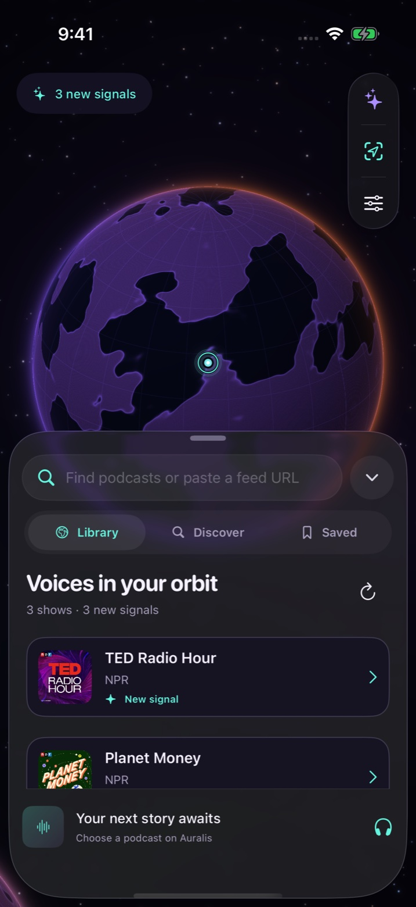
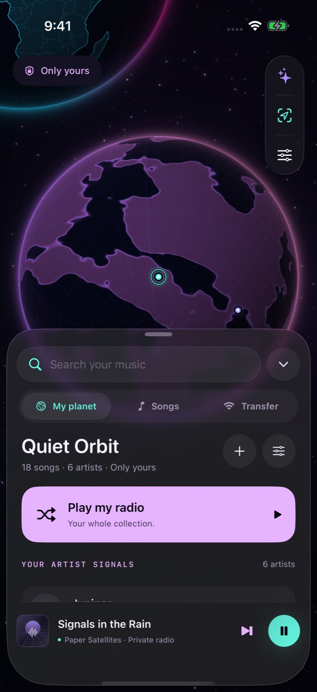
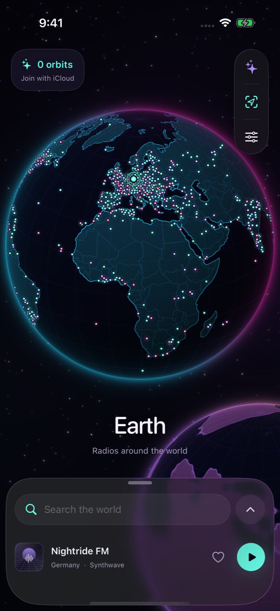
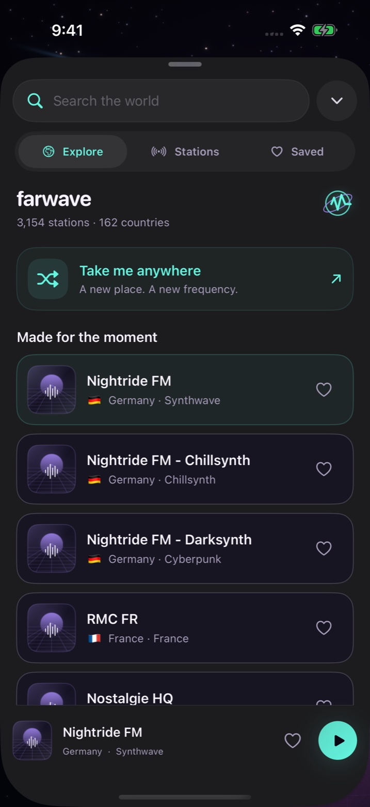
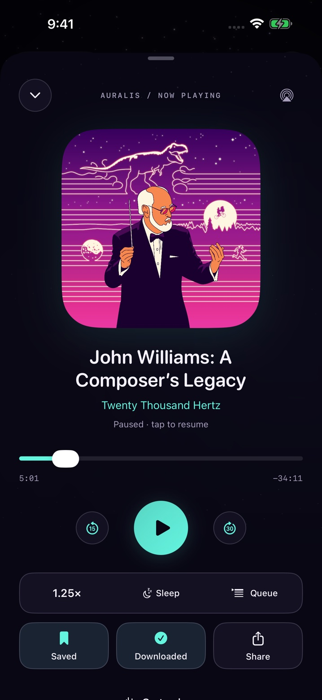
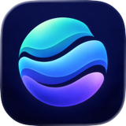
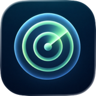
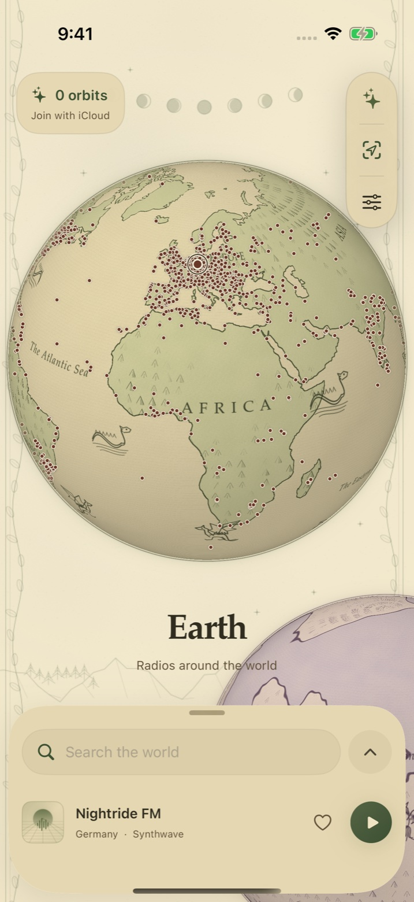

LIVE RADIO. PODCASTS. YOUR MUSIC.
A universe
of listening.
Live radio from around the world, podcasts, and your own music.
Download on the App StoreAvailable now for iPhone & iPad · iOS 18+



01 / EARTH LIVE RADIO
The world
is on air.
Tap a station on the globe, browse by country, or search by name or genre. Or hit “Take me anywhere.”
- Thousands of stations worldwide
- Listening history
- Background audio and AirPlay
Pro adds iCloud-synced favorites and CarPlay.


02 / AURALIS FARWAVE PRO
Podcasts,
in orbit.
Search for a show or paste an RSS feed. Followed shows light up on Auralis when new episodes arrive.
- Offline downloads
- Saved progress and a queue
- 0.5×–3× speed and a sleep timer
Shows, progress, and downloads stay on this device.
03 / MY PLANET FARWAVE PRO
Your music,
your planet.
Import audio from Files or over Wi-Fi from your computer. Each artist becomes a signal on your private planet.
- Shuffle by artist
- Turn your library into a personal radio station
- Plays offline
MP3 · M4A · AAC · WAV · AIFF · CAF · FLAC
Bring your own audio. No streaming catalog included.
THEMES PRO
Seven themes.
Seven icons.
Neon skies, antique maps, fantasy worlds, pixel landscapes, and more.



Favorites
Saved stations, synced with iCloud.
Podcasts
Follow shows, queue, and download episodes.
Your music
Import your own audio and listen offline.
CarPlay
Live radio on your car’s display.
Themes
Seven looks for the whole app.
App icons
A matching icon for every theme.
Widgets
Stations and favorites on your Home Screen.
Subscription or lifetime purchase. Prices shown in the app.
FAQ
What can I listen to offline?
With Pro, downloaded podcast episodes and imported music. Live radio and streaming need a connection.
Does my library sync between devices?
Radio favorites sync through iCloud with Pro. Podcasts, downloads, and imported music stay on each device. No account needed.
Does Farwave remove ads from radio or podcasts?
No. Stations and publishers control their own audio, including ads.
Which devices does it support?
iPhone and iPad on iOS 18 or later. Pro adds CarPlay and widgets.
Get Farwave.
For iPhone & iPad.
Download on the App StoreSupport
Bugs, questions, or ideas.